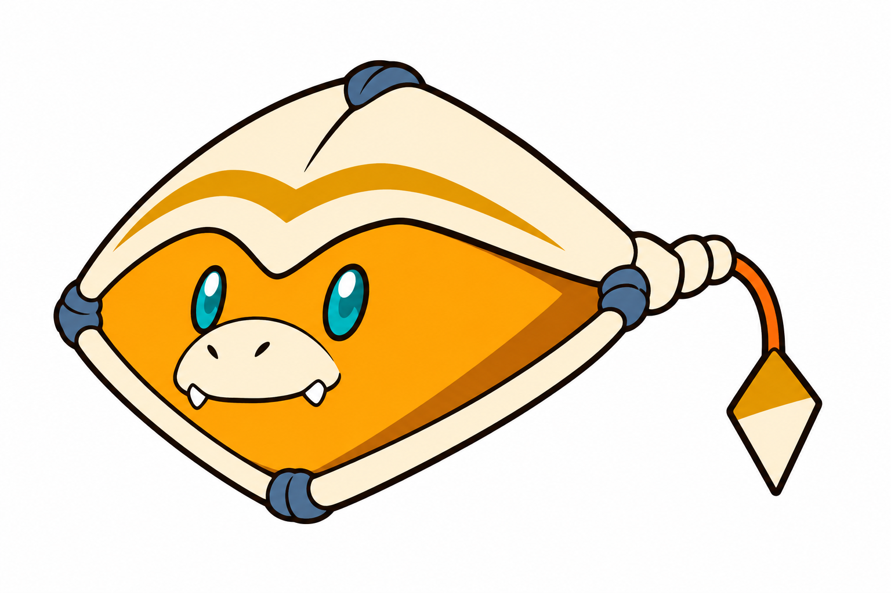
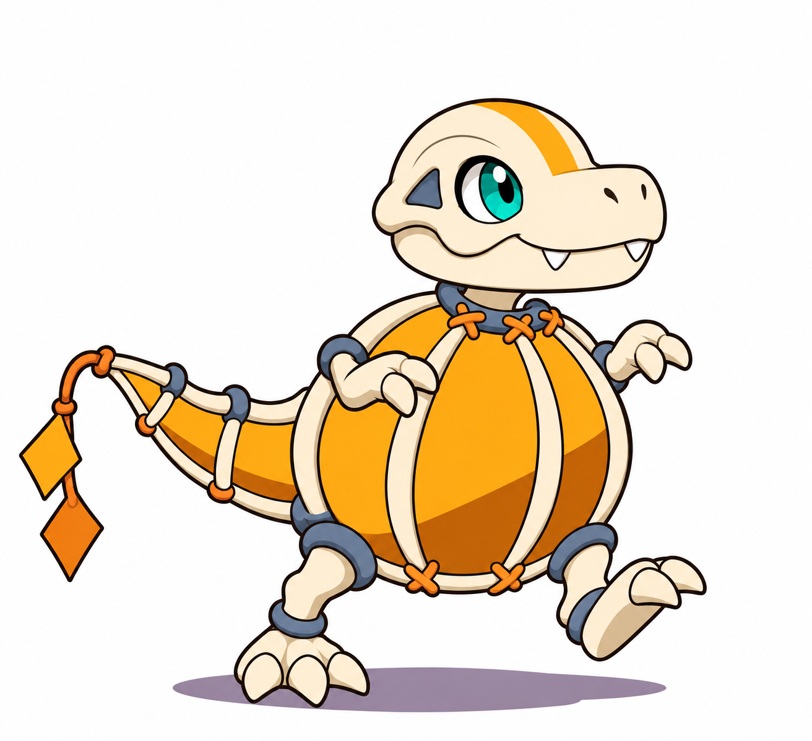
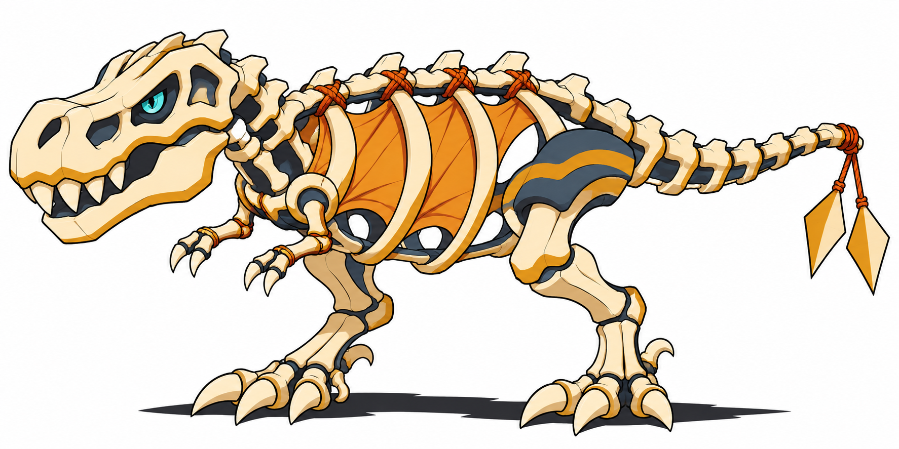
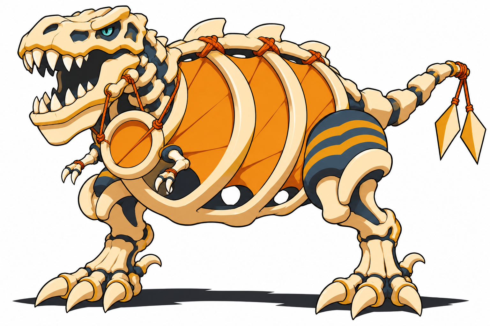

Calquim · Bebê — Aprovado

Começa a perceber vibrações na própria membrana.
Ação: Sentir vibrações
Limite proposto: Não se ancora para produzir sons fortes.
BriefQuatro conceitos aprovados visualmente. Nomes e mecânicas propostos; sem integração.
Decisões e pesquisa · Fontes · Comparativo
Começa a perceber vibrações na própria membrana.
Ação: Sentir vibrações
Limite proposto: Não se ancora para produzir sons fortes.
Brief
Aprende a apoiar o corpo e marcar ritmos com passos.
Ação: Marcar um ritmo
Limite proposto: Corpo leve e pouca pressão nas membranas.
Brief
Coordena mandíbula e estrutura do peito para projetar chamados.
Ação: Projetar um chamado
Limite proposto: Precisa alinhar o corpo e recuperar tensão.
Brief
Aprende a usar mandíbula, costelas e membranas em conjunto.
Ação: Ressoar
Limite proposto: A maior pressão exige apoio firme e recuperação.
Brief